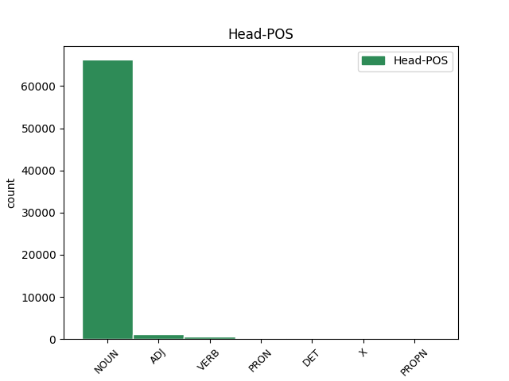
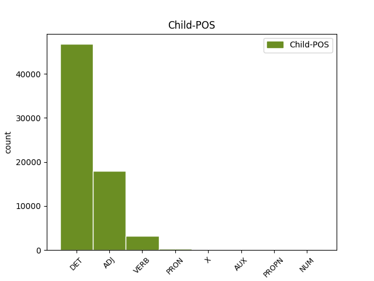

Distribution of features within this leaf



Agreement Rules sorted by frequency.
When the head token is NOUN and the dependent token is DET.
1 Selon _ _ _ _ 0 _ _ _
2 une _ _ _ _ 0 _ _ _
3 première _ _ _ _ 0 _ _ _
4 hypothèse _ _ _ _ 0 _ _ _
5 , _ _ _ _ 0 _ _ _
6 l' _ _ _ _ 0 _ _ _
7 origine _ _ _ _ 0 _ _ _
8 est _ _ _ _ 0 _ _ _
9 issue _ _ _ _ 0 _ _ _
10 de _ _ _ _ 0 _ _ _
11 l' _ _ _ _ 0 _ _ _
12 appelatif _ _ _ _ 0 _ _ _
13 gaulois _ _ _ _ 0 _ _ _
14 alpe _ _ _ _ 0 _ _ _
15 , _ _ _ _ 0 _ _ _
16 lui-même _ _ _ _ 0 _ _ _
17 issu _ _ _ _ 0 _ _ _
18 d' _ _ _ _ 0 _ _ _
19 une _ _ _ _ 0 _ _ _
20 racine _ _ _ _ 0 _ _ _
21 celtique _ _ _ _ 0 _ _ _
22 ou _ _ _ _ 0 _ _ _
23 pré-celtique _ _ _ _ 0 _ _ _
24 alp _ _ _ _ 0 _ _ _
25 qui _ _ _ _ 0 _ _ _
26 viendrait _ _ _ _ 0 _ _ _
27 dalbos _ _ _ _ 0 _ _ _
28 signifiant _ _ _ _ 0 _ _ _
29 selon _ _ _ _ 0 _ _ _
30 Delamarre _ _ _ _ 0 _ _ _
31 « _ _ _ _ 0 _ _ _
32 le _ _ _ _ 0 _ _ _
33 monde _ _ _ _ 0 _ _ _
34 lumineux _ _ _ _ 0 _ _ _
35 , _ _ _ _ 0 _ _ _
36 le le DET _ Definite=Def|Gender=Masc|Number=Sing|PronType=Art 37 det _ _
37 monde monde NOUN _ Gender=Masc|Number=Sing 0 _ _ _
38 d' _ _ _ _ 0 _ _ _
39 en _ _ _ _ 0 _ _ _
40 haut _ _ _ _ 0 _ _ _
41 » _ _ _ _ 0 _ _ _
42 . _ _ _ _ 0 _ _ _
When the head token is NOUN and the dependent token is ADJ.
1 Selon _ _ _ _ 0 _ _ _
2 une _ _ _ _ 0 _ _ _
3 première _ _ _ _ 0 _ _ _
4 hypothèse _ _ _ _ 0 _ _ _
5 , _ _ _ _ 0 _ _ _
6 l' _ _ _ _ 0 _ _ _
7 origine _ _ _ _ 0 _ _ _
8 est _ _ _ _ 0 _ _ _
9 issue _ _ _ _ 0 _ _ _
10 de _ _ _ _ 0 _ _ _
11 l' _ _ _ _ 0 _ _ _
12 appelatif _ _ _ _ 0 _ _ _
13 gaulois _ _ _ _ 0 _ _ _
14 alpe _ _ _ _ 0 _ _ _
15 , _ _ _ _ 0 _ _ _
16 lui-même _ _ _ _ 0 _ _ _
17 issu _ _ _ _ 0 _ _ _
18 d' _ _ _ _ 0 _ _ _
19 une _ _ _ _ 0 _ _ _
20 racine _ _ _ _ 0 _ _ _
21 celtique _ _ _ _ 0 _ _ _
22 ou _ _ _ _ 0 _ _ _
23 pré-celtique _ _ _ _ 0 _ _ _
24 alp _ _ _ _ 0 _ _ _
25 qui _ _ _ _ 0 _ _ _
26 viendrait _ _ _ _ 0 _ _ _
27 dalbos _ _ _ _ 0 _ _ _
28 signifiant _ _ _ _ 0 _ _ _
29 selon _ _ _ _ 0 _ _ _
30 Delamarre _ _ _ _ 0 _ _ _
31 « _ _ _ _ 0 _ _ _
32 le _ _ _ _ 0 _ _ _
33 monde monde NOUN _ Gender=Masc|Number=Sing 0 _ _ _
34 lumineux lumineux ADJ _ Gender=Masc|Number=Sing 33 mod _ SpaceAfter=No
35 , _ _ _ _ 0 _ _ _
36 le _ _ _ _ 0 _ _ _
37 monde _ _ _ _ 0 _ _ _
38 d' _ _ _ _ 0 _ _ _
39 en _ _ _ _ 0 _ _ _
40 haut _ _ _ _ 0 _ _ _
41 » _ _ _ _ 0 _ _ _
42 . _ _ _ _ 0 _ _ _
When the head token is NOUN and the dependent token is VERB.
1 La _ _ _ _ 0 _ _ _
2 population _ _ _ _ 0 _ _ _
3 est _ _ _ _ 0 _ _ _
4 alors _ _ _ _ 0 _ _ _
5 indigène _ _ _ _ 0 _ _ _
6 et _ _ _ _ 0 _ _ _
7 fait _ _ _ _ 0 _ _ _
8 partie _ _ _ _ 0 _ _ _
9 de _ _ _ _ 0 _ _ _
10 les _ _ _ _ 0 _ _ _
11 Nearchi _ _ _ _ 0 _ _ _
12 , _ _ _ _ 0 _ _ _
13 peuple peuple NOUN _ Gender=Masc|Number=Sing 0 _ _ _
14 établi établir VERB _ Gender=Masc|Number=Sing|Tense=Past|VerbForm=Part 13 mod _ _
15 sur _ _ _ _ 0 _ _ _
16 une _ _ _ _ 0 _ _ _
17 partie _ _ _ _ 0 _ _ _
18 de _ _ _ _ 0 _ _ _
19 la _ _ _ _ 0 _ _ _
20 Crau _ _ _ _ 0 _ _ _
21 et _ _ _ _ 0 _ _ _
22 de _ _ _ _ 0 _ _ _
23 les _ _ _ _ 0 _ _ _
24 Alpilles _ _ _ _ 0 _ _ _
25 . _ _ _ _ 0 _ _ _
When the head token is ADJ and the dependent token is ADJ.
1 Selon _ _ _ _ 0 _ _ _
2 une _ _ _ _ 0 _ _ _
3 première _ _ _ _ 0 _ _ _
4 hypothèse _ _ _ _ 0 _ _ _
5 , _ _ _ _ 0 _ _ _
6 l' _ _ _ _ 0 _ _ _
7 origine _ _ _ _ 0 _ _ _
8 est _ _ _ _ 0 _ _ _
9 issue _ _ _ _ 0 _ _ _
10 de _ _ _ _ 0 _ _ _
11 l' _ _ _ _ 0 _ _ _
12 appelatif _ _ _ _ 0 _ _ _
13 gaulois _ _ _ _ 0 _ _ _
14 alpe _ _ _ _ 0 _ _ _
15 , _ _ _ _ 0 _ _ _
16 lui-même _ _ _ _ 0 _ _ _
17 issu _ _ _ _ 0 _ _ _
18 d' _ _ _ _ 0 _ _ _
19 une _ _ _ _ 0 _ _ _
20 racine _ _ _ _ 0 _ _ _
21 celtique celtique ADJ _ Gender=Fem|Number=Sing 0 _ _ _
22 ou _ _ _ _ 0 _ _ _
23 pré-celtique pré-celtique ADJ _ Gender=Fem|Number=Sing 21 conj _ _
24 alp _ _ _ _ 0 _ _ _
25 qui _ _ _ _ 0 _ _ _
26 viendrait _ _ _ _ 0 _ _ _
27 dalbos _ _ _ _ 0 _ _ _
28 signifiant _ _ _ _ 0 _ _ _
29 selon _ _ _ _ 0 _ _ _
30 Delamarre _ _ _ _ 0 _ _ _
31 « _ _ _ _ 0 _ _ _
32 le _ _ _ _ 0 _ _ _
33 monde _ _ _ _ 0 _ _ _
34 lumineux _ _ _ _ 0 _ _ _
35 , _ _ _ _ 0 _ _ _
36 le _ _ _ _ 0 _ _ _
37 monde _ _ _ _ 0 _ _ _
38 d' _ _ _ _ 0 _ _ _
39 en _ _ _ _ 0 _ _ _
40 haut _ _ _ _ 0 _ _ _
41 » _ _ _ _ 0 _ _ _
42 . _ _ _ _ 0 _ _ _
When the head token is VERB and the dependent token is VERB.
1 Claude _ _ _ _ 0 _ _ _
2 Barbin _ _ _ _ 0 _ _ _
3 , _ _ _ _ 0 _ _ _
4 né naître VERB _ Gender=Masc|Number=Sing|Tense=Past|VerbForm=Part 0 _ _ _
5 vers _ _ _ _ 0 _ _ _
6 1628 _ _ _ _ 0 _ _ _
7 et _ _ _ _ 0 _ _ _
8 mort mourir VERB _ Gender=Masc|Number=Sing|Tense=Past|VerbForm=Part 4 conj _ _
9 le _ _ _ _ 0 _ _ _
10 24 _ _ _ _ 0 _ _ _
11 décembre _ _ _ _ 0 _ _ _
12 1698 _ _ _ _ 0 _ _ _
13 , _ _ _ _ 0 _ _ _
14 est _ _ _ _ 0 _ _ _
15 un _ _ _ _ 0 _ _ _
16 imprimeur _ _ _ _ 0 _ _ _
17 et _ _ _ _ 0 _ _ _
18 libraire _ _ _ _ 0 _ _ _
19 français _ _ _ _ 0 _ _ _
20 . _ _ _ _ 0 _ _ _
When the head token is ADJ and the dependent token is DET.
1 Un _ _ _ _ 0 _ _ _
2 voyage _ _ _ _ 0 _ _ _
3 de _ _ _ _ 0 _ _ _
4 12000 _ _ _ _ 0 _ _ _
5 kilomètres _ _ _ _ 0 _ _ _
6 tout _ _ _ _ 0 _ _ _
7 en _ _ _ _ 0 _ _ _
8 restant _ _ _ _ 0 _ _ _
9 à _ _ _ _ 0 _ _ _
10 Paris _ _ _ _ 0 _ _ _
11 ... _ _ _ _ 0 _ _ _
12 Des _ _ _ _ 0 _ _ _
13 vrais _ _ _ _ 0 _ _ _
14 plats _ _ _ _ 0 _ _ _
15 Thai _ _ _ _ 0 _ _ _
16 certes _ _ _ _ 0 _ _ _
17 un un DET _ Definite=Ind|Gender=Masc|Number=Sing|PronType=Art 19 mod _ EXTPOS=ADV|Type=MWE
18 peu _ _ _ _ 0 _ _ _
19 cher cher ADJ _ Gender=Masc|Number=Sing 0 _ _ _
20 . _ _ _ _ 0 _ _ _
When the head token is NOUN and the dependent token is PRON.
1 Krutwig _ _ _ _ 0 _ _ _
2 ne _ _ _ _ 0 _ _ _
3 participa _ _ _ _ 0 _ _ _
4 nullement _ _ _ _ 0 _ _ _
5 à _ _ _ _ 0 _ _ _
6 ce _ _ _ _ 0 _ _ _
7 projet _ _ _ _ 0 _ _ _
8 , _ _ _ _ 0 _ _ _
9 trop _ _ _ _ 0 _ _ _
10 guipuscoan _ _ _ _ 0 _ _ _
11 à _ _ _ _ 0 _ _ _
12 ses _ _ _ _ 0 _ _ _
13 yeux _ _ _ _ 0 _ _ _
14 car _ _ _ _ 0 _ _ _
15 il _ _ _ _ 0 _ _ _
16 tenait _ _ _ _ 0 _ _ _
17 à _ _ _ _ 0 _ _ _
18 la _ _ _ _ 0 _ _ _
19 généralisation _ _ _ _ 0 _ _ _
20 de _ _ _ _ 0 _ _ _
21 le _ _ _ _ 0 _ _ _
22 labourdin labourdin NOUN _ Gender=Masc|Number=Sing 0 _ _ _
23 « _ _ _ _ 0 _ _ _
24 classique _ _ _ _ 0 _ _ _
25 » _ _ _ _ 0 _ _ _
26 selon _ _ _ _ 0 _ _ _
27 lui _ _ _ _ 0 _ _ _
28 : _ _ _ _ 0 _ _ _
29 pas _ _ _ _ 0 _ _ _
30 celui celui PRON _ Gender=Masc|Number=Sing|PronType=Dem 22 appos _ _
31 d' _ _ _ _ 0 _ _ _
32 Axular _ _ _ _ 0 _ _ _
33 , _ _ _ _ 0 _ _ _
34 trop _ _ _ _ 0 _ _ _
35 populaire _ _ _ _ 0 _ _ _
36 à _ _ _ _ 0 _ _ _
37 ses _ _ _ _ 0 _ _ _
38 yeux _ _ _ _ 0 _ _ _
39 , _ _ _ _ 0 _ _ _
40 mais _ _ _ _ 0 _ _ _
41 celui _ _ _ _ 0 _ _ _
42 plus _ _ _ _ 0 _ _ _
43 archaïque _ _ _ _ 0 _ _ _
44 de _ _ _ _ 0 _ _ _
45 Lizarraga _ _ _ _ 0 _ _ _
46 dans _ _ _ _ 0 _ _ _
47 Testament _ _ _ _ 0 _ _ _
48 Berria _ _ _ _ 0 _ _ _
49 . _ _ _ _ 0 _ _ _
When the head token is VERB and the dependent token is ADJ.
1 Formé former VERB _ Gender=Masc|Number=Sing|Tense=Past|VerbForm=Part 0 _ _ _
2 lors _ _ _ _ 0 _ _ _
3 de _ _ _ _ 0 _ _ _
4 le _ _ _ _ 0 _ _ _
5 déclin _ _ _ _ 0 _ _ _
6 de _ _ _ _ 0 _ _ _
7 le _ _ _ _ 0 _ _ _
8 vérisme _ _ _ _ 0 _ _ _
9 , _ _ _ _ 0 _ _ _
10 sensible sensible ADJ _ Gender=Masc|Number=Sing 1 conj _ _
11 à _ _ _ _ 0 _ _ _
12 la _ _ _ _ 0 _ _ _
13 musique _ _ _ _ 0 _ _ _
14 de _ _ _ _ 0 _ _ _
15 Wagner _ _ _ _ 0 _ _ _
16 , _ _ _ _ 0 _ _ _
17 il _ _ _ _ 0 _ _ _
18 obtient _ _ _ _ 0 _ _ _
19 son _ _ _ _ 0 _ _ _
20 premier _ _ _ _ 0 _ _ _
21 succès _ _ _ _ 0 _ _ _
22 avec _ _ _ _ 0 _ _ _
23 Giovanni _ _ _ _ 0 _ _ _
24 Gallurese _ _ _ _ 0 _ _ _
25 , _ _ _ _ 0 _ _ _
26 créé _ _ _ _ 0 _ _ _
27 à _ _ _ _ 0 _ _ _
28 Turin _ _ _ _ 0 _ _ _
29 en _ _ _ _ 0 _ _ _
30 1905 _ _ _ _ 0 _ _ _
31 . _ _ _ _ 0 _ _ _
When the head token is PRON and the dependent token is DET.
1 Le _ _ _ _ 0 _ _ _
2 localisme _ _ _ _ 0 _ _ _
3 est _ _ _ _ 0 _ _ _
4 l' le DET _ Definite=Def|Gender=Masc|Number=Sing|PronType=Art 5 det _ SpaceAfter=No
5 un un PRON _ Gender=Masc|Number=Sing 0 _ _ _
6 de _ _ _ _ 0 _ _ _
7 les _ _ _ _ 0 _ _ _
8 maux _ _ _ _ 0 _ _ _
9 les _ _ _ _ 0 _ _ _
10 plus _ _ _ _ 0 _ _ _
11 persistants _ _ _ _ 0 _ _ _
12 de _ _ _ _ 0 _ _ _
13 l' _ _ _ _ 0 _ _ _
14 université _ _ _ _ 0 _ _ _
15 française _ _ _ _ 0 _ _ _
16 et _ _ _ _ 0 _ _ _
17 la _ _ _ _ 0 _ _ _
18 réforme _ _ _ _ 0 _ _ _
19 actuelle _ _ _ _ 0 _ _ _
20 ne _ _ _ _ 0 _ _ _
21 modifie _ _ _ _ 0 _ _ _
22 pas _ _ _ _ 0 _ _ _
23 radicalement _ _ _ _ 0 _ _ _
24 la _ _ _ _ 0 _ _ _
25 donne _ _ _ _ 0 _ _ _
26 dans _ _ _ _ 0 _ _ _
27 le _ _ _ _ 0 _ _ _
28 sens _ _ _ _ 0 _ _ _
29 d' _ _ _ _ 0 _ _ _
30 une _ _ _ _ 0 _ _ _
31 plus _ _ _ _ 0 _ _ _
32 grande _ _ _ _ 0 _ _ _
33 circulation _ _ _ _ 0 _ _ _
34 de _ _ _ _ 0 _ _ _
35 les _ _ _ _ 0 _ _ _
36 enseignants-chercheurs _ _ _ _ 0 _ _ _
37 ni _ _ _ _ 0 _ _ _
38 de _ _ _ _ 0 _ _ _
39 les _ _ _ _ 0 _ _ _
40 étudiants _ _ _ _ 0 _ _ _
41 . _ _ _ _ 0 _ _ _
When the head token is PRON and the dependent token is VERB.
1 Installée installer VERB _ Gender=Fem|Number=Sing|Tense=Past|VerbForm=Part 7 mod _ _
2 en _ _ _ _ 0 _ _ _
3 France _ _ _ _ 0 _ _ _
4 en _ _ _ _ 0 _ _ _
5 1923 _ _ _ _ 0 _ _ _
6 , _ _ _ _ 0 _ _ _
7 elle il PRON _ Gender=Fem|Number=Sing|Person=3|PronType=Prs 0 _ _ _
8 est _ _ _ _ 0 _ _ _
9 connue _ _ _ _ 0 _ _ _
10 pour _ _ _ _ 0 _ _ _
11 ses _ _ _ _ 0 _ _ _
12 dessins _ _ _ _ 0 _ _ _
13 en _ _ _ _ 0 _ _ _
14 noir _ _ _ _ 0 _ _ _
15 et _ _ _ _ 0 _ _ _
16 blanc _ _ _ _ 0 _ _ _
17 à _ _ _ _ 0 _ _ _
18 l' _ _ _ _ 0 _ _ _
19 encre _ _ _ _ 0 _ _ _
20 de _ _ _ _ 0 _ _ _
21 Chine _ _ _ _ 0 _ _ _
22 tracés _ _ _ _ 0 _ _ _
23 avec _ _ _ _ 0 _ _ _
24 une _ _ _ _ 0 _ _ _
25 plume _ _ _ _ 0 _ _ _
26 Sergent-Major _ _ _ _ 0 _ _ _
27 , _ _ _ _ 0 _ _ _
28 ses _ _ _ _ 0 _ _ _
29 gouaches _ _ _ _ 0 _ _ _
30 à _ _ _ _ 0 _ _ _
31 les _ _ _ _ 0 _ _ _
32 couleurs _ _ _ _ 0 _ _ _
33 vives _ _ _ _ 0 _ _ _
34 et _ _ _ _ 0 _ _ _
35 d' _ _ _ _ 0 _ _ _
36 importants _ _ _ _ 0 _ _ _
37 décors _ _ _ _ 0 _ _ _
38 muraux _ _ _ _ 0 _ _ _
39 . _ _ _ _ 0 _ _ _
When the head token is ADJ and the dependent token is VERB.
1 L' _ _ _ _ 0 _ _ _
2 avenue _ _ _ _ 0 _ _ _
3 résulte _ _ _ _ 0 _ _ _
4 de _ _ _ _ 0 _ _ _
5 la _ _ _ _ 0 _ _ _
6 transformation _ _ _ _ 0 _ _ _
7 , _ _ _ _ 0 _ _ _
8 dans _ _ _ _ 0 _ _ _
9 le _ _ _ _ 0 _ _ _
10 cadre _ _ _ _ 0 _ _ _
11 de _ _ _ _ 0 _ _ _
12 les _ _ _ _ 0 _ _ _
13 travaux _ _ _ _ 0 _ _ _
14 haussmanniens _ _ _ _ 0 _ _ _
15 , _ _ _ _ 0 _ _ _
16 d' _ _ _ _ 0 _ _ _
17 une _ _ _ _ 0 _ _ _
18 partie _ _ _ _ 0 _ _ _
19 de _ _ _ _ 0 _ _ _
20 la _ _ _ _ 0 _ _ _
21 rue _ _ _ _ 0 _ _ _
22 Mouffetard _ _ _ _ 0 _ _ _
23 ouverte _ _ _ _ 0 _ _ _
24 par _ _ _ _ 0 _ _ _
25 les _ _ _ _ 0 _ _ _
26 Romains _ _ _ _ 0 _ _ _
27 à _ _ _ _ 0 _ _ _
28 le _ _ _ _ 0 _ _ _
29 Ier _ _ _ _ 0 _ _ _
30 siècle _ _ _ _ 0 _ _ _
31 pour _ _ _ _ 0 _ _ _
32 relier _ _ _ _ 0 _ _ _
33 Lutèce _ _ _ _ 0 _ _ _
34 à _ _ _ _ 0 _ _ _
35 Rome _ _ _ _ 0 _ _ _
36 , _ _ _ _ 0 _ _ _
37 à _ _ _ _ 0 _ _ _
38 le _ _ _ _ 0 _ _ _
39 sud _ _ _ _ 0 _ _ _
40 de _ _ _ _ 0 _ _ _
41 le _ _ _ _ 0 _ _ _
42 passage _ _ _ _ 0 _ _ _
43 de _ _ _ _ 0 _ _ _
44 la _ _ _ _ 0 _ _ _
45 Bièvre _ _ _ _ 0 _ _ _
46 , _ _ _ _ 0 _ _ _
47 en _ _ _ _ 0 _ _ _
48 avenue _ _ _ _ 0 _ _ _
49 rectiligne rectiligne ADJ _ Gender=Fem|Number=Sing 0 _ _ _
50 et _ _ _ _ 0 _ _ _
51 bordée border VERB _ Gender=Fem|Number=Sing|Tense=Past|VerbForm=Part 49 conj _ _
52 d' _ _ _ _ 0 _ _ _
53 arbres _ _ _ _ 0 _ _ _
54 . _ _ _ _ 0 _ _ _
When the head token is VERB and the dependent token is PRON.
1 Le _ _ _ _ 0 _ _ _
2 vendredi _ _ _ _ 0 _ _ _
3 , _ _ _ _ 0 _ _ _
4 malgré _ _ _ _ 0 _ _ _
5 l' _ _ _ _ 0 _ _ _
6 opposition _ _ _ _ 0 _ _ _
7 populaire _ _ _ _ 0 _ _ _
8 , _ _ _ _ 0 _ _ _
9 le _ _ _ _ 0 _ _ _
10 Conseil _ _ _ _ 0 _ _ _
11 constitutionnel _ _ _ _ 0 _ _ _
12 , _ _ _ _ 0 _ _ _
13 considérant _ _ _ _ 0 _ _ _
14 que _ _ _ _ 0 _ _ _
15 Abdoulaye _ _ _ _ 0 _ _ _
16 Wade _ _ _ _ 0 _ _ _
17 n' _ _ _ _ 0 _ _ _
18 a _ _ _ _ 0 _ _ _
19 pas _ _ _ _ 0 _ _ _
20 effectué _ _ _ _ 0 _ _ _
21 deux _ _ _ _ 0 _ _ _
22 mandats _ _ _ _ 0 _ _ _
23 car _ _ _ _ 0 _ _ _
24 la _ _ _ _ 0 _ _ _
25 limite _ _ _ _ 0 _ _ _
26 n' _ _ _ _ 0 _ _ _
27 existait _ _ _ _ 0 _ _ _
28 pas _ _ _ _ 0 _ _ _
29 à _ _ _ _ 0 _ _ _
30 le _ _ _ _ 0 _ _ _
31 moment _ _ _ _ 0 _ _ _
32 de _ _ _ _ 0 _ _ _
33 sa _ _ _ _ 0 _ _ _
34 première _ _ _ _ 0 _ _ _
35 élection _ _ _ _ 0 _ _ _
36 en _ _ _ _ 0 _ _ _
37 2000 _ _ _ _ 0 _ _ _
38 , _ _ _ _ 0 _ _ _
39 valide _ _ _ _ 0 _ _ _
40 sa _ _ _ _ 0 _ _ _
41 candidature _ _ _ _ 0 _ _ _
42 , _ _ _ _ 0 _ _ _
43 tandis _ _ _ _ 0 _ _ _
44 que _ _ _ _ 0 _ _ _
45 celles celui PRON _ Gender=Fem|Number=Plur|PronType=Dem 56 comp:obj _ _
46 de _ _ _ _ 0 _ _ _
47 Youssou _ _ _ _ 0 _ _ _
48 N'Dour _ _ _ _ 0 _ _ _
49 , _ _ _ _ 0 _ _ _
50 Kéba _ _ _ _ 0 _ _ _
51 Keinde _ _ _ _ 0 _ _ _
52 et _ _ _ _ 0 _ _ _
53 Abdourahmane _ _ _ _ 0 _ _ _
54 Sarr _ _ _ _ 0 _ _ _
55 sont _ _ _ _ 0 _ _ _
56 refusées refuser VERB _ Gender=Fem|Number=Plur|Tense=Past|VerbForm=Part 0 _ _ _
57 . _ _ _ _ 0 _ _ _
When the head token is PRON and the dependent token is ADJ.
1 Krutwig _ _ _ _ 0 _ _ _
2 ne _ _ _ _ 0 _ _ _
3 participa _ _ _ _ 0 _ _ _
4 nullement _ _ _ _ 0 _ _ _
5 à _ _ _ _ 0 _ _ _
6 ce _ _ _ _ 0 _ _ _
7 projet _ _ _ _ 0 _ _ _
8 , _ _ _ _ 0 _ _ _
9 trop _ _ _ _ 0 _ _ _
10 guipuscoan _ _ _ _ 0 _ _ _
11 à _ _ _ _ 0 _ _ _
12 ses _ _ _ _ 0 _ _ _
13 yeux _ _ _ _ 0 _ _ _
14 car _ _ _ _ 0 _ _ _
15 il _ _ _ _ 0 _ _ _
16 tenait _ _ _ _ 0 _ _ _
17 à _ _ _ _ 0 _ _ _
18 la _ _ _ _ 0 _ _ _
19 généralisation _ _ _ _ 0 _ _ _
20 de _ _ _ _ 0 _ _ _
21 le _ _ _ _ 0 _ _ _
22 labourdin _ _ _ _ 0 _ _ _
23 « _ _ _ _ 0 _ _ _
24 classique _ _ _ _ 0 _ _ _
25 » _ _ _ _ 0 _ _ _
26 selon _ _ _ _ 0 _ _ _
27 lui _ _ _ _ 0 _ _ _
28 : _ _ _ _ 0 _ _ _
29 pas _ _ _ _ 0 _ _ _
30 celui _ _ _ _ 0 _ _ _
31 d' _ _ _ _ 0 _ _ _
32 Axular _ _ _ _ 0 _ _ _
33 , _ _ _ _ 0 _ _ _
34 trop _ _ _ _ 0 _ _ _
35 populaire _ _ _ _ 0 _ _ _
36 à _ _ _ _ 0 _ _ _
37 ses _ _ _ _ 0 _ _ _
38 yeux _ _ _ _ 0 _ _ _
39 , _ _ _ _ 0 _ _ _
40 mais _ _ _ _ 0 _ _ _
41 celui celui PRON _ Gender=Masc|Number=Sing|PronType=Dem 0 _ _ _
42 plus _ _ _ _ 0 _ _ _
43 archaïque archaïque ADJ _ Gender=Masc|Number=Sing 41 mod _ _
44 de _ _ _ _ 0 _ _ _
45 Lizarraga _ _ _ _ 0 _ _ _
46 dans _ _ _ _ 0 _ _ _
47 Testament _ _ _ _ 0 _ _ _
48 Berria _ _ _ _ 0 _ _ _
49 . _ _ _ _ 0 _ _ _
When the head token is VERB and the dependent token is DET.
1 Le le DET _ Definite=Def|Gender=Masc|Number=Sing|PronType=Art 2 det _ _
2 dénommé dénommer VERB _ Gender=Masc|Number=Sing|Tense=Past|VerbForm=Part 0 _ _ _
3 « _ _ _ _ 0 _ _ _
4 Ahmed _ _ _ _ 0 _ _ _
5 Daoudi _ _ _ _ 0 _ _ _
6 » _ _ _ _ 0 _ _ _
7 a _ _ _ _ 0 _ _ _
8 de _ _ _ _ 0 _ _ _
9 multiples _ _ _ _ 0 _ _ _
10 antécédents _ _ _ _ 0 _ _ _
11 judiciaires _ _ _ _ 0 _ _ _
12 . _ _ _ _ 0 _ _ _
When the head token is PRON and the dependent token is PRON.
1 Krutwig _ _ _ _ 0 _ _ _
2 ne _ _ _ _ 0 _ _ _
3 participa _ _ _ _ 0 _ _ _
4 nullement _ _ _ _ 0 _ _ _
5 à _ _ _ _ 0 _ _ _
6 ce _ _ _ _ 0 _ _ _
7 projet _ _ _ _ 0 _ _ _
8 , _ _ _ _ 0 _ _ _
9 trop _ _ _ _ 0 _ _ _
10 guipuscoan _ _ _ _ 0 _ _ _
11 à _ _ _ _ 0 _ _ _
12 ses _ _ _ _ 0 _ _ _
13 yeux _ _ _ _ 0 _ _ _
14 car _ _ _ _ 0 _ _ _
15 il _ _ _ _ 0 _ _ _
16 tenait _ _ _ _ 0 _ _ _
17 à _ _ _ _ 0 _ _ _
18 la _ _ _ _ 0 _ _ _
19 généralisation _ _ _ _ 0 _ _ _
20 de _ _ _ _ 0 _ _ _
21 le _ _ _ _ 0 _ _ _
22 labourdin _ _ _ _ 0 _ _ _
23 « _ _ _ _ 0 _ _ _
24 classique _ _ _ _ 0 _ _ _
25 » _ _ _ _ 0 _ _ _
26 selon _ _ _ _ 0 _ _ _
27 lui _ _ _ _ 0 _ _ _
28 : _ _ _ _ 0 _ _ _
29 pas _ _ _ _ 0 _ _ _
30 celui celui PRON _ Gender=Masc|Number=Sing|PronType=Dem 0 _ _ _
31 d' _ _ _ _ 0 _ _ _
32 Axular _ _ _ _ 0 _ _ _
33 , _ _ _ _ 0 _ _ _
34 trop _ _ _ _ 0 _ _ _
35 populaire _ _ _ _ 0 _ _ _
36 à _ _ _ _ 0 _ _ _
37 ses _ _ _ _ 0 _ _ _
38 yeux _ _ _ _ 0 _ _ _
39 , _ _ _ _ 0 _ _ _
40 mais _ _ _ _ 0 _ _ _
41 celui celui PRON _ Gender=Masc|Number=Sing|PronType=Dem 30 conj _ _
42 plus _ _ _ _ 0 _ _ _
43 archaïque _ _ _ _ 0 _ _ _
44 de _ _ _ _ 0 _ _ _
45 Lizarraga _ _ _ _ 0 _ _ _
46 dans _ _ _ _ 0 _ _ _
47 Testament _ _ _ _ 0 _ _ _
48 Berria _ _ _ _ 0 _ _ _
49 . _ _ _ _ 0 _ _ _
When the head token is DET and the dependent token is PRON.
1 Finalement _ _ _ _ 0 _ _ _
2 , _ _ _ _ 0 _ _ _
3 si _ _ _ _ 0 _ _ _
4 le _ _ _ _ 0 _ _ _
5 dossier _ _ _ _ 0 _ _ _
6 n' _ _ _ _ 0 _ _ _
7 est _ _ _ _ 0 _ _ _
8 pas _ _ _ _ 0 _ _ _
9 de _ _ _ _ 0 _ _ _
10 le le DET _ Definite=Def|Gender=Masc|Number=Sing|PronType=Art 0 _ _ _
11 tout tout PRON _ Gender=Masc|Number=Sing 10 unk@fixed _ _
12 concluant _ _ _ _ 0 _ _ _
13 , _ _ _ _ 0 _ _ _
14 on _ _ _ _ 0 _ _ _
15 peut _ _ _ _ 0 _ _ _
16 tout _ _ _ _ 0 _ _ _
17 simplement _ _ _ _ 0 _ _ _
18 décider _ _ _ _ 0 _ _ _
19 de _ _ _ _ 0 _ _ _
20 rejeter _ _ _ _ 0 _ _ _
21 la _ _ _ _ 0 _ _ _
22 plainte _ _ _ _ 0 _ _ _
23 . _ _ _ _ 0 _ _ _
When the head token is ADJ and the dependent token is PRON.
1 Selon _ _ _ _ 0 _ _ _
2 une _ _ _ _ 0 _ _ _
3 première _ _ _ _ 0 _ _ _
4 hypothèse _ _ _ _ 0 _ _ _
5 , _ _ _ _ 0 _ _ _
6 l' _ _ _ _ 0 _ _ _
7 origine _ _ _ _ 0 _ _ _
8 est _ _ _ _ 0 _ _ _
9 issue _ _ _ _ 0 _ _ _
10 de _ _ _ _ 0 _ _ _
11 l' _ _ _ _ 0 _ _ _
12 appelatif _ _ _ _ 0 _ _ _
13 gaulois _ _ _ _ 0 _ _ _
14 alpe _ _ _ _ 0 _ _ _
15 , _ _ _ _ 0 _ _ _
16 lui-même lui-même PRON _ Gender=Masc|Number=Sing|Person=3|Reflex=Yes 17 mod _ _
17 issu issu ADJ _ Gender=Masc|Number=Sing 0 _ _ _
18 d' _ _ _ _ 0 _ _ _
19 une _ _ _ _ 0 _ _ _
20 racine _ _ _ _ 0 _ _ _
21 celtique _ _ _ _ 0 _ _ _
22 ou _ _ _ _ 0 _ _ _
23 pré-celtique _ _ _ _ 0 _ _ _
24 alp _ _ _ _ 0 _ _ _
25 qui _ _ _ _ 0 _ _ _
26 viendrait _ _ _ _ 0 _ _ _
27 dalbos _ _ _ _ 0 _ _ _
28 signifiant _ _ _ _ 0 _ _ _
29 selon _ _ _ _ 0 _ _ _
30 Delamarre _ _ _ _ 0 _ _ _
31 « _ _ _ _ 0 _ _ _
32 le _ _ _ _ 0 _ _ _
33 monde _ _ _ _ 0 _ _ _
34 lumineux _ _ _ _ 0 _ _ _
35 , _ _ _ _ 0 _ _ _
36 le _ _ _ _ 0 _ _ _
37 monde _ _ _ _ 0 _ _ _
38 d' _ _ _ _ 0 _ _ _
39 en _ _ _ _ 0 _ _ _
40 haut _ _ _ _ 0 _ _ _
41 » _ _ _ _ 0 _ _ _
42 . _ _ _ _ 0 _ _ _
When the head token is DET and the dependent token is DET.
1 On _ _ _ _ 0 _ _ _
2 peut _ _ _ _ 0 _ _ _
3 produire _ _ _ _ 0 _ _ _
4 expérimentalement _ _ _ _ 0 _ _ _
5 et _ _ _ _ 0 _ _ _
6 transitoirement _ _ _ _ 0 _ _ _
7 un _ _ _ _ 0 _ _ _
8 phénomène _ _ _ _ 0 _ _ _
9 de _ _ _ _ 0 _ _ _
10 personnalité _ _ _ _ 0 _ _ _
11 multiple _ _ _ _ 0 _ _ _
12 a _ _ _ _ 0 _ _ _
13 minima _ _ _ _ 0 _ _ _
14 par _ _ _ _ 0 _ _ _
15 utilisation _ _ _ _ 0 _ _ _
16 de _ _ _ _ 0 _ _ _
17 l' _ _ _ _ 0 _ _ _
18 hypnose _ _ _ _ 0 _ _ _
19 : _ _ _ _ 0 _ _ _
20 on _ _ _ _ 0 _ _ _
21 suggère _ _ _ _ 0 _ _ _
22 à _ _ _ _ 0 _ _ _
23 la _ _ _ _ 0 _ _ _
24 personne _ _ _ _ 0 _ _ _
25 , _ _ _ _ 0 _ _ _
26 sous _ _ _ _ 0 _ _ _
27 état _ _ _ _ 0 _ _ _
28 de _ _ _ _ 0 _ _ _
29 transe _ _ _ _ 0 _ _ _
30 hypnotique _ _ _ _ 0 _ _ _
31 , _ _ _ _ 0 _ _ _
32 qu' _ _ _ _ 0 _ _ _
33 elle _ _ _ _ 0 _ _ _
34 a _ _ _ _ 0 _ _ _
35 telle tel DET _ Definite=Ind|Gender=Fem|Number=Sing|PronType=Art 0 _ _ _
36 ou _ _ _ _ 0 _ _ _
37 telle tel DET _ Definite=Ind|Gender=Fem|Number=Sing|PronType=Art 35 conj _ _
38 caractéristique _ _ _ _ 0 _ _ _
39 et _ _ _ _ 0 _ _ _
40 on _ _ _ _ 0 _ _ _
41 peut _ _ _ _ 0 _ _ _
42 constater _ _ _ _ 0 _ _ _
43 qu' _ _ _ _ 0 _ _ _
44 elle _ _ _ _ 0 _ _ _
45 se _ _ _ _ 0 _ _ _
46 plie _ _ _ _ 0 _ _ _
47 à _ _ _ _ 0 _ _ _
48 cette _ _ _ _ 0 _ _ _
49 suggestion _ _ _ _ 0 _ _ _
50 et _ _ _ _ 0 _ _ _
51 se _ _ _ _ 0 _ _ _
52 donne _ _ _ _ 0 _ _ _
53 le _ _ _ _ 0 _ _ _
54 rôle _ _ _ _ 0 _ _ _
55 proposé _ _ _ _ 0 _ _ _
56 . _ _ _ _ 0 _ _ _
When the head token is VERB and the dependent token is AUX.
1 Elle _ _ _ _ 0 _ _ _
2 a _ _ _ _ 0 _ _ _
3 fait faire VERB _ Gender=Masc|Number=Sing|Tense=Past|VerbForm=Part 0 _ _ _
4 partie _ _ _ _ 0 _ _ _
5 de _ _ _ _ 0 _ _ _
6 l' _ _ _ _ 0 _ _ _
7 indice _ _ _ _ 0 _ _ _
8 TecDAX _ _ _ _ 0 _ _ _
9 de _ _ _ _ 0 _ _ _
10 2004 _ _ _ _ 0 _ _ _
11 à _ _ _ _ 0 _ _ _
12 2009 _ _ _ _ 0 _ _ _
13 , _ _ _ _ 0 _ _ _
14 puis _ _ _ _ 0 _ _ _
15 y _ _ _ _ 0 _ _ _
16 été être AUX _ Gender=Masc|Number=Sing|Tense=Past|VerbForm=Part 3 conj _ _
17 réintégrée _ _ _ _ 0 _ _ _
18 en _ _ _ _ 0 _ _ _
19 mars _ _ _ _ 0 _ _ _
20 2010 _ _ _ _ 0 _ _ _
21 . _ _ _ _ 0 _ _ _
When the head token is DET and the dependent token is ADJ.
1 Avec _ _ _ _ 0 _ _ _
2 en _ _ _ _ 0 _ _ _
3 plus _ _ _ _ 0 _ _ _
4 facturation _ _ _ _ 0 _ _ _
5 de _ _ _ _ 0 _ _ _
6 3h _ _ _ _ 0 _ _ _
7 de _ _ _ _ 0 _ _ _
8 main _ _ _ _ 0 _ _ _
9 d' _ _ _ _ 0 _ _ _
10 oeuvre _ _ _ _ 0 _ _ _
11 pour _ _ _ _ 0 _ _ _
12 une _ _ _ _ 0 _ _ _
13 révision _ _ _ _ 0 _ _ _
14 qui _ _ _ _ 0 _ _ _
15 à _ _ _ _ 0 _ _ _
16 le le DET _ Definite=Def|Gender=Masc|Number=Sing|PronType=Art 0 _ _ _
17 bas bas ADJ _ Gender=Masc|Number=Sing 16 unk@fixed _ _
18 mot _ _ _ _ 0 _ _ _
19 prend _ _ _ _ 0 _ _ _
20 1h30 _ _ _ _ 0 _ _ _
21 / _ _ _ _ 0 _ _ _
22 2h _ _ _ _ 0 _ _ _
23 maximum _ _ _ _ 0 _ _ _
24 . _ _ _ _ 0 _ _ _
When the head token is PROPN and the dependent token is DET.
1 Il _ _ _ _ 0 _ _ _
2 est _ _ _ _ 0 _ _ _
3 l' _ _ _ _ 0 _ _ _
4 auteur _ _ _ _ 0 _ _ _
5 de _ _ _ _ 0 _ _ _
6 le _ _ _ _ 0 _ _ _
7 Garage _ _ _ _ 0 _ _ _
8 Citroën _ _ _ _ 0 _ _ _
9 , _ _ _ _ 0 _ _ _
10 rue _ _ _ _ 0 _ _ _
11 Marbeuf _ _ _ _ 0 _ _ _
12 à _ _ _ _ 0 _ _ _
13 Paris _ _ _ _ 0 _ _ _
14 ( _ _ _ _ 0 _ _ _
15 1929 _ _ _ _ 0 _ _ _
16 ) _ _ _ _ 0 _ _ _
17 mais _ _ _ _ 0 _ _ _
18 il _ _ _ _ 0 _ _ _
19 est _ _ _ _ 0 _ _ _
20 surtout _ _ _ _ 0 _ _ _
21 connu _ _ _ _ 0 _ _ _
22 pour _ _ _ _ 0 _ _ _
23 avoir _ _ _ _ 0 _ _ _
24 conçu _ _ _ _ 0 _ _ _
25 en _ _ _ _ 0 _ _ _
26 1931 _ _ _ _ 0 _ _ _
27 le le DET _ Definite=Def|Gender=Masc|Number=Sing|PronType=Art 28 det _ _
28 Palais palais PROPN _ Gender=Masc|Number=Sing 0 _ _ _
29 de _ _ _ _ 0 _ _ _
30 la _ _ _ _ 0 _ _ _
31 Porte _ _ _ _ 0 _ _ _
32 Dorée _ _ _ _ 0 _ _ _
33 , _ _ _ _ 0 _ _ _
34 actuelle _ _ _ _ 0 _ _ _
35 Cité _ _ _ _ 0 _ _ _
36 nationale _ _ _ _ 0 _ _ _
37 de _ _ _ _ 0 _ _ _
38 l' _ _ _ _ 0 _ _ _
39 histoire _ _ _ _ 0 _ _ _
40 de _ _ _ _ 0 _ _ _
41 l' _ _ _ _ 0 _ _ _
42 immigration _ _ _ _ 0 _ _ _
43 . _ _ _ _ 0 _ _ _
When the head token is X and the dependent token is DET.
1 Selon _ _ _ _ 0 _ _ _
2 Andy _ _ _ _ 0 _ _ _
3 Hertzfeld _ _ _ _ 0 _ _ _
4 , _ _ _ _ 0 _ _ _
5 le _ _ _ _ 0 _ _ _
6 Macintosh _ _ _ _ 0 _ _ _
7 128K _ _ _ _ 0 _ _ _
8 , _ _ _ _ 0 _ _ _
9 tel _ _ _ _ 0 _ _ _
10 que _ _ _ _ 0 _ _ _
11 le _ _ _ _ 0 _ _ _
12 connaît _ _ _ _ 0 _ _ _
13 le _ _ _ _ 0 _ _ _
14 public _ _ _ _ 0 _ _ _
15 aujourd'hui _ _ _ _ 0 _ _ _
16 , _ _ _ _ 0 _ _ _
17 n' _ _ _ _ 0 _ _ _
18 a _ _ _ _ 0 _ _ _
19 plus _ _ _ _ 0 _ _ _
20 grand-chose _ _ _ _ 0 _ _ _
21 à _ _ _ _ 0 _ _ _
22 voir _ _ _ _ 0 _ _ _
23 avec _ _ _ _ 0 _ _ _
24 l' _ _ _ _ 0 _ _ _
25 ordinateur _ _ _ _ 0 _ _ _
26 qu' _ _ _ _ 0 _ _ _
27 avait _ _ _ _ 0 _ _ _
28 imaginé _ _ _ _ 0 _ _ _
29 initialement _ _ _ _ 0 _ _ _
30 Jef _ _ _ _ 0 _ _ _
31 Raskin _ _ _ _ 0 _ _ _
32 dans _ _ _ _ 0 _ _ _
33 son son DET _ Gender=Masc|Number=Sing|Poss=Yes|PronType=Prs 34 det _ _
34 Book Book X _ Foreign=Yes|Gender=Masc|Number=Sing 0 _ _ _
35 of _ _ _ _ 0 _ _ _
36 Macintosh _ _ _ _ 0 _ _ _
37 . _ _ _ _ 0 _ _ _
When the head token is VERB and the dependent token is X.
1 Elles _ _ _ _ 0 _ _ _
2 abritent _ _ _ _ 0 _ _ _
3 également _ _ _ _ 0 _ _ _
4 une _ _ _ _ 0 _ _ _
5 collection _ _ _ _ 0 _ _ _
6 de _ _ _ _ 0 _ _ _
7 plus _ _ _ _ 0 _ _ _
8 de _ _ _ _ 0 _ _ _
9 2 000 _ _ _ _ 0 _ _ _
10 enregistrements _ _ _ _ 0 _ _ _
11 d' _ _ _ _ 0 _ _ _
12 entrevues _ _ _ _ 0 _ _ _
13 liées _ _ _ _ 0 _ _ _
14 à _ _ _ _ 0 _ _ _
15 l' _ _ _ _ 0 _ _ _
16 art _ _ _ _ 0 _ _ _
17 et _ _ _ _ 0 _ _ _
18 publient _ _ _ _ 0 _ _ _
19 une _ _ _ _ 0 _ _ _
20 publication _ _ _ _ 0 _ _ _
21 bi-annuelle _ _ _ _ 0 _ _ _
22 appelée appeler VERB _ Gender=Fem|Number=Sing|Tense=Past|VerbForm=Part 0 _ _ _
23 Archives Archives X _ Foreign=Yes|Gender=Fem|Number=Plur 22 comp:pred _ Foreign=en
24 of _ _ _ _ 0 _ _ _
25 American _ _ _ _ 0 _ _ _
26 Art _ _ _ _ 0 _ _ _
27 Journal _ _ _ _ 0 _ _ _
28 qui _ _ _ _ 0 _ _ _
29 met _ _ _ _ 0 _ _ _
30 en _ _ _ _ 0 _ _ _
31 valeur _ _ _ _ 0 _ _ _
32 les _ _ _ _ 0 _ _ _
33 collections _ _ _ _ 0 _ _ _
34 . _ _ _ _ 0 _ _ _
When the head token is X and the dependent token is X.
1 Mais _ _ _ _ 0 _ _ _
2 peu _ _ _ _ 0 _ _ _
3 à _ _ _ _ 0 _ _ _
4 peu _ _ _ _ 0 _ _ _
5 il _ _ _ _ 0 _ _ _
6 s' _ _ _ _ 0 _ _ _
7 éloigne _ _ _ _ 0 _ _ _
8 de _ _ _ _ 0 _ _ _
9 le _ _ _ _ 0 _ _ _
10 logicisme _ _ _ _ 0 _ _ _
11 et _ _ _ _ 0 _ _ _
12 s' _ _ _ _ 0 _ _ _
13 oriente _ _ _ _ 0 _ _ _
14 vers _ _ _ _ 0 _ _ _
15 la _ _ _ _ 0 _ _ _
16 philosophie _ _ _ _ 0 _ _ _
17 de _ _ _ _ 0 _ _ _
18 la _ _ _ _ 0 _ _ _
19 nature _ _ _ _ 0 _ _ _
20 ( _ _ _ _ 0 _ _ _
21 An _ _ _ _ 0 _ _ _
22 Inquiry _ _ _ _ 0 _ _ _
23 concerning _ _ _ _ 0 _ _ _
24 the _ _ _ _ 0 _ _ _
25 Principles _ _ _ _ 0 _ _ _
26 of _ _ _ _ 0 _ _ _
27 Natural _ _ _ _ 0 _ _ _
28 Knowledge _ _ _ _ 0 _ _ _
29 ( _ _ _ _ 0 _ _ _
30 1919 _ _ _ _ 0 _ _ _
31 ) _ _ _ _ 0 _ _ _
32 , _ _ _ _ 0 _ _ _
33 The The X _ Definite=Def|Foreign=Yes|Gender=Masc|Number=Sing 0 _ _ _
34 Concept Concept X _ Foreign=Yes|Gender=Masc|Number=Sing 33 flat@foreign _ Foreign=en
35 of _ _ _ _ 0 _ _ _
36 Nature _ _ _ _ 0 _ _ _
37 ( _ _ _ _ 0 _ _ _
38 1920 _ _ _ _ 0 _ _ _
39 ) _ _ _ _ 0 _ _ _
40 . _ _ _ _ 0 _ _ _
When the head token is NOUN and the dependent token is PROPN.
1 Il _ _ _ _ 0 _ _ _
2 comprend _ _ _ _ 0 _ _ _
3 un _ _ _ _ 0 _ _ _
4 live _ _ _ _ 0 _ _ _
5 donné _ _ _ _ 0 _ _ _
6 à _ _ _ _ 0 _ _ _
7 la _ _ _ _ 0 _ _ _
8 Brixton _ _ _ _ 0 _ _ _
9 Academy _ _ _ _ 0 _ _ _
10 de _ _ _ _ 0 _ _ _
11 Londres _ _ _ _ 0 _ _ _
12 en _ _ _ _ 0 _ _ _
13 décembre _ _ _ _ 0 _ _ _
14 2004 _ _ _ _ 0 _ _ _
15 ( _ _ _ _ 0 _ _ _
16 disponible _ _ _ _ 0 _ _ _
17 avec _ _ _ _ 0 _ _ _
18 ou _ _ _ _ 0 _ _ _
19 sans _ _ _ _ 0 _ _ _
20 inserts _ _ _ _ 0 _ _ _
21 ) _ _ _ _ 0 _ _ _
22 , _ _ _ _ 0 _ _ _
23 un _ _ _ _ 0 _ _ _
24 docu _ _ _ _ 0 _ _ _
25 , _ _ _ _ 0 _ _ _
26 des _ _ _ _ 0 _ _ _
27 interviews _ _ _ _ 0 _ _ _
28 de _ _ _ _ 0 _ _ _
29 le _ _ _ _ 0 _ _ _
30 groupe _ _ _ _ 0 _ _ _
31 , _ _ _ _ 0 _ _ _
32 de _ _ _ _ 0 _ _ _
33 ses _ _ _ _ 0 _ _ _
34 fans _ _ _ _ 0 _ _ _
35 , _ _ _ _ 0 _ _ _
36 et _ _ _ _ 0 _ _ _
37 d' _ _ _ _ 0 _ _ _
38 autres _ _ _ _ 0 _ _ _
39 musiciens _ _ _ _ 0 _ _ _
40 , _ _ _ _ 0 _ _ _
41 des _ _ _ _ 0 _ _ _
42 images _ _ _ _ 0 _ _ _
43 diverses _ _ _ _ 0 _ _ _
44 et _ _ _ _ 0 _ _ _
45 variées _ _ _ _ 0 _ _ _
46 de _ _ _ _ 0 _ _ _
47 le _ _ _ _ 0 _ _ _
48 groupe _ _ _ _ 0 _ _ _
49 en _ _ _ _ 0 _ _ _
50 tournée _ _ _ _ 0 _ _ _
51 dans _ _ _ _ 0 _ _ _
52 le _ _ _ _ 0 _ _ _
53 monde _ _ _ _ 0 _ _ _
54 , _ _ _ _ 0 _ _ _
55 deux _ _ _ _ 0 _ _ _
56 clips clip NOUN _ Gender=Masc|Number=Plur 0 _ _ _
57 ( _ _ _ _ 0 _ _ _
58 Imperium Imperium PROPN _ Gender=Masc|Number=Sing 56 appos _ _
59 et _ _ _ _ 0 _ _ _
60 Days _ _ _ _ 0 _ _ _
61 Turn _ _ _ _ 0 _ _ _
62 Blue _ _ _ _ 0 _ _ _
63 To _ _ _ _ 0 _ _ _
64 Gray _ _ _ _ 0 _ _ _
65 ) _ _ _ _ 0 _ _ _
66 avec _ _ _ _ 0 _ _ _
67 leurs _ _ _ _ 0 _ _ _
68 making-of _ _ _ _ 0 _ _ _
69 , _ _ _ _ 0 _ _ _
70 et _ _ _ _ 0 _ _ _
71 The _ _ _ _ 0 _ _ _
72 Blood _ _ _ _ 0 _ _ _
73 , _ _ _ _ 0 _ _ _
74 The _ _ _ _ 0 _ _ _
75 Sweat _ _ _ _ 0 _ _ _
76 , _ _ _ _ 0 _ _ _
77 The _ _ _ _ 0 _ _ _
78 Tears _ _ _ _ 0 _ _ _
79 enregistré _ _ _ _ 0 _ _ _
80 en _ _ _ _ 0 _ _ _
81 live _ _ _ _ 0 _ _ _
82 à _ _ _ _ 0 _ _ _
83 Francfort _ _ _ _ 0 _ _ _
84 en _ _ _ _ 0 _ _ _
85 1999 _ _ _ _ 0 _ _ _
86 . _ _ _ _ 0 _ _ _
When the head token is NOUN and the dependent token is NUM.
1 À _ _ _ _ 0 _ _ _
2 titre _ _ _ _ 0 _ _ _
3 indicatif _ _ _ _ 0 _ _ _
4 , _ _ _ _ 0 _ _ _
5 le _ _ _ _ 0 _ _ _
6 coût _ _ _ _ 0 _ _ _
7 d' _ _ _ _ 0 _ _ _
8 une _ _ _ _ 0 _ _ _
9 usine _ _ _ _ 0 _ _ _
10 de _ _ _ _ 0 _ _ _
11 liquéfaction _ _ _ _ 0 _ _ _
12 , _ _ _ _ 0 _ _ _
13 de _ _ _ _ 0 _ _ _
14 taille _ _ _ _ 0 _ _ _
15 minimale _ _ _ _ 0 _ _ _
16 de _ _ _ _ 0 _ _ _
17 l' _ _ _ _ 0 _ _ _
18 ordre _ _ _ _ 0 _ _ _
19 de _ _ _ _ 0 _ _ _
20 45 _ _ _ _ 0 _ _ _
21 Gthermies _ _ _ _ 0 _ _ _
22 / _ _ _ _ 0 _ _ _
23 an _ _ _ _ 0 _ _ _
24 ( _ _ _ _ 0 _ _ _
25 3,5 _ _ _ _ 0 _ _ _
26 millions _ _ _ _ 0 _ _ _
27 de _ _ _ _ 0 _ _ _
28 tonnes _ _ _ _ 0 _ _ _
29 de _ _ _ _ 0 _ _ _
30 gaz _ _ _ _ 0 _ _ _
31 naturel _ _ _ _ 0 _ _ _
32 liquéfié _ _ _ _ 0 _ _ _
33 ) _ _ _ _ 0 _ _ _
34 est _ _ _ _ 0 _ _ _
35 de _ _ _ _ 0 _ _ _
36 l' _ _ _ _ 0 _ _ _
37 ordre _ _ _ _ 0 _ _ _
38 de _ _ _ _ 0 _ _ _
39 400 _ _ _ _ 0 _ _ _
40 à _ _ _ _ 0 _ _ _
41 500 _ _ _ _ 0 _ _ _
42 millions million NUM _ Gender=Masc|Number=Plur 43 mod _ _
43 USD USD NOUN _ Gender=Masc|Number=Plur 0 _ _ _
44 et _ _ _ _ 0 _ _ _
45 si _ _ _ _ 0 _ _ _
46 l' _ _ _ _ 0 _ _ _
47 on _ _ _ _ 0 _ _ _
48 veut _ _ _ _ 0 _ _ _
49 doubler _ _ _ _ 0 _ _ _
50 cette _ _ _ _ 0 _ _ _
51 capacité _ _ _ _ 0 _ _ _
52 , _ _ _ _ 0 _ _ _
53 il _ _ _ _ 0 _ _ _
54 faut _ _ _ _ 0 _ _ _
55 ajouter _ _ _ _ 0 _ _ _
56 85 _ _ _ _ 0 _ _ _
57 % _ _ _ _ 0 _ _ _
58 de _ _ _ _ 0 _ _ _
59 plus _ _ _ _ 0 _ _ _
60 à _ _ _ _ 0 _ _ _
61 ce _ _ _ _ 0 _ _ _
62 coût _ _ _ _ 0 _ _ _
63 . _ _ _ _ 0 _ _ _
When the head token is VERB and the dependent token is PROPN.
1 Il _ _ _ _ 0 _ _ _
2 est _ _ _ _ 0 _ _ _
3 l' _ _ _ _ 0 _ _ _
4 auteur _ _ _ _ 0 _ _ _
5 de _ _ _ _ 0 _ _ _
6 le _ _ _ _ 0 _ _ _
7 Garage _ _ _ _ 0 _ _ _
8 Citroën _ _ _ _ 0 _ _ _
9 , _ _ _ _ 0 _ _ _
10 rue _ _ _ _ 0 _ _ _
11 Marbeuf _ _ _ _ 0 _ _ _
12 à _ _ _ _ 0 _ _ _
13 Paris _ _ _ _ 0 _ _ _
14 ( _ _ _ _ 0 _ _ _
15 1929 _ _ _ _ 0 _ _ _
16 ) _ _ _ _ 0 _ _ _
17 mais _ _ _ _ 0 _ _ _
18 il _ _ _ _ 0 _ _ _
19 est _ _ _ _ 0 _ _ _
20 surtout _ _ _ _ 0 _ _ _
21 connu _ _ _ _ 0 _ _ _
22 pour _ _ _ _ 0 _ _ _
23 avoir _ _ _ _ 0 _ _ _
24 conçu concevoir VERB _ Gender=Masc|Number=Sing|Tense=Past|VerbForm=Part 0 _ _ _
25 en _ _ _ _ 0 _ _ _
26 1931 _ _ _ _ 0 _ _ _
27 le _ _ _ _ 0 _ _ _
28 Palais palais PROPN _ Gender=Masc|Number=Sing 24 comp:obj _ _
29 de _ _ _ _ 0 _ _ _
30 la _ _ _ _ 0 _ _ _
31 Porte _ _ _ _ 0 _ _ _
32 Dorée _ _ _ _ 0 _ _ _
33 , _ _ _ _ 0 _ _ _
34 actuelle _ _ _ _ 0 _ _ _
35 Cité _ _ _ _ 0 _ _ _
36 nationale _ _ _ _ 0 _ _ _
37 de _ _ _ _ 0 _ _ _
38 l' _ _ _ _ 0 _ _ _
39 histoire _ _ _ _ 0 _ _ _
40 de _ _ _ _ 0 _ _ _
41 l' _ _ _ _ 0 _ _ _
42 immigration _ _ _ _ 0 _ _ _
43 . _ _ _ _ 0 _ _ _
Disagree Examples:
1 Les _ _ _ _ 0 _ _ _
2 commotions _ _ _ _ 0 _ _ _
3 cérébrales _ _ _ _ 0 _ _ _
4 sont _ _ _ _ 0 _ _ _
5 devenu devenir VERB _ Gender=Masc|Number=Sing|Tense=Past|Typo=Yes|VerbForm=Part 0 _ _ _
6 si _ _ _ _ 0 _ _ _
7 courantes courant ADJ _ Gender=Fem|Number=Plur 5 comp:pred _ _
8 dans _ _ _ _ 0 _ _ _
9 ce _ _ _ _ 0 _ _ _
10 sport _ _ _ _ 0 _ _ _
11 qu' _ _ _ _ 0 _ _ _
12 on _ _ _ _ 0 _ _ _
13 les _ _ _ _ 0 _ _ _
14 considére _ _ _ _ 0 _ _ _
15 presque _ _ _ _ 0 _ _ _
16 comme _ _ _ _ 0 _ _ _
17 la _ _ _ _ 0 _ _ _
18 routine _ _ _ _ 0 _ _ _
19 . _ _ _ _ 0 _ _ _
1 Motivé motiver VERB _ Gender=Masc|Number=Sing|Tense=Past|VerbForm=Part 8 mod _ _
2 par _ _ _ _ 0 _ _ _
3 la _ _ _ _ 0 _ _ _
4 charité _ _ _ _ 0 _ _ _
5 chrétienne _ _ _ _ 0 _ _ _
6 , _ _ _ _ 0 _ _ _
7 la _ _ _ _ 0 _ _ _
8 communauté communauté NOUN _ Gender=Fem|Number=Sing 0 _ _ _
9 a _ _ _ _ 0 _ _ _
10 changé _ _ _ _ 0 _ _ _
11 un _ _ _ _ 0 _ _ _
12 vieil _ _ _ _ 0 _ _ _
13 immeuble _ _ _ _ 0 _ _ _
14 abanbonné _ _ _ _ 0 _ _ _
15 où _ _ _ _ 0 _ _ _
16 se _ _ _ _ 0 _ _ _
17 pratiquaient _ _ _ _ 0 _ _ _
18 d' _ _ _ _ 0 _ _ _
19 ailleurs _ _ _ _ 0 _ _ _
20 de _ _ _ _ 0 _ _ _
21 nombreux _ _ _ _ 0 _ _ _
22 échanges _ _ _ _ 0 _ _ _
23 de _ _ _ _ 0 _ _ _
24 drogues _ _ _ _ 0 _ _ _
25 en _ _ _ _ 0 _ _ _
26 ce _ _ _ _ 0 _ _ _
27 logement _ _ _ _ 0 _ _ _
28 sûr _ _ _ _ 0 _ _ _
29 , _ _ _ _ 0 _ _ _
30 propre _ _ _ _ 0 _ _ _
31 et _ _ _ _ 0 _ _ _
32 abordable _ _ _ _ 0 _ _ _
33 qu' _ _ _ _ 0 _ _ _
34 il _ _ _ _ 0 _ _ _
35 est _ _ _ _ 0 _ _ _
36 aujourd'hui _ _ _ _ 0 _ _ _
37 . _ _ _ _ 0 _ _ _
1 La _ _ _ _ 0 _ _ _
2 cathédrale _ _ _ _ 0 _ _ _
3 , _ _ _ _ 0 _ _ _
4 l' le DET _ Definite=Def|Gender=Masc|Number=Sing|PronType=Art 5 det _ SpaceAfter=No
5 une un PRON _ Gender=Fem|Number=Sing 0 _ _ _
6 de _ _ _ _ 0 _ _ _
7 les _ _ _ _ 0 _ _ _
8 plus _ _ _ _ 0 _ _ _
9 vastes _ _ _ _ 0 _ _ _
10 églises _ _ _ _ 0 _ _ _
11 de _ _ _ _ 0 _ _ _
12 le _ _ _ _ 0 _ _ _
13 monde _ _ _ _ 0 _ _ _
14 arménien _ _ _ _ 0 _ _ _
15 , _ _ _ _ 0 _ _ _
16 est _ _ _ _ 0 _ _ _
17 bâtie _ _ _ _ 0 _ _ _
18 sur _ _ _ _ 0 _ _ _
19 le _ _ _ _ 0 _ _ _
20 modèle _ _ _ _ 0 _ _ _
21 de _ _ _ _ 0 _ _ _
22 la _ _ _ _ 0 _ _ _
23 cathédrale _ _ _ _ 0 _ _ _
24 d' _ _ _ _ 0 _ _ _
25 Etchmiadzin _ _ _ _ 0 _ _ _
26 : _ _ _ _ 0 _ _ _
27 il _ _ _ _ 0 _ _ _
28 s' _ _ _ _ 0 _ _ _
29 agit _ _ _ _ 0 _ _ _
30 d' _ _ _ _ 0 _ _ _
31 une _ _ _ _ 0 _ _ _
32 croix _ _ _ _ 0 _ _ _
33 libre _ _ _ _ 0 _ _ _
34 dotée _ _ _ _ 0 _ _ _
35 de _ _ _ _ 0 _ _ _
36 quatre _ _ _ _ 0 _ _ _
37 absides _ _ _ _ 0 _ _ _
38 . _ _ _ _ 0 _ _ _
1 C' _ _ _ _ 0 _ _ _
2 est _ _ _ _ 0 _ _ _
3 l' le DET _ Definite=Def|Gender=Masc|Number=Sing|PronType=Art 4 det _ SpaceAfter=No
4 une un PRON _ Gender=Fem|Number=Sing 0 _ _ _
5 de _ _ _ _ 0 _ _ _
6 les _ _ _ _ 0 _ _ _
7 trois _ _ _ _ 0 _ _ _
8 banlieues _ _ _ _ 0 _ _ _
9 où _ _ _ _ 0 _ _ _
10 ce _ _ _ _ 0 _ _ _
11 trafic _ _ _ _ 0 _ _ _
12 domine _ _ _ _ 0 _ _ _
13 . _ _ _ _ 0 _ _ _
1 1949 _ _ _ _ 0 _ _ _
2 , _ _ _ _ 0 _ _ _
3 Châtelard _ _ _ _ 0 _ _ _
4 , _ _ _ _ 0 _ _ _
5 propriétaire _ _ _ _ 0 _ _ _
6 d' _ _ _ _ 0 _ _ _
7 une _ _ _ _ 0 _ _ _
8 grande _ _ _ _ 0 _ _ _
9 brasserie _ _ _ _ 0 _ _ _
10 et _ _ _ _ 0 _ _ _
11 d' _ _ _ _ 0 _ _ _
12 un _ _ _ _ 0 _ _ _
13 cinéma _ _ _ _ 0 _ _ _
14 à _ _ _ _ 0 _ _ _
15 Cherbourg _ _ _ _ 0 _ _ _
16 , _ _ _ _ 0 _ _ _
17 accompagne _ _ _ _ 0 _ _ _
18 sa _ _ _ _ 0 _ _ _
19 concubine _ _ _ _ 0 _ _ _
20 , _ _ _ _ 0 _ _ _
21 Odile _ _ _ _ 0 _ _ _
22 , _ _ _ _ 0 _ _ _
23 à _ _ _ _ 0 _ _ _
24 l' _ _ _ _ 0 _ _ _
25 enterrement _ _ _ _ 0 _ _ _
26 de _ _ _ _ 0 _ _ _
27 son _ _ _ _ 0 _ _ _
28 père _ _ _ _ 0 _ _ _
29 , _ _ _ _ 0 _ _ _
30 dans _ _ _ _ 0 _ _ _
31 un _ _ _ _ 0 _ _ _
32 petit _ _ _ _ 0 _ _ _
33 port port NOUN _ Gender=Masc|Number=Sing 0 _ _ _
34 Normand normand ADJ _ Gender=Fem|Number=Sing 33 mod _ SpaceAfter=No
35 . _ _ _ _ 0 _ _ _